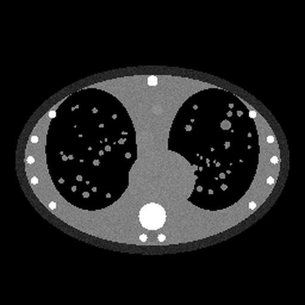
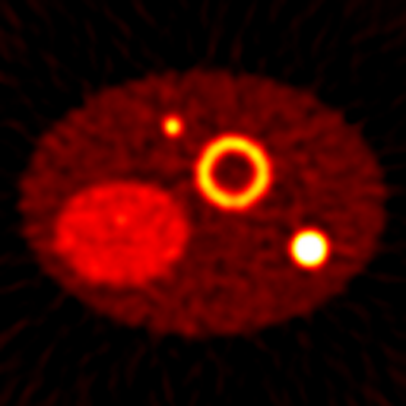
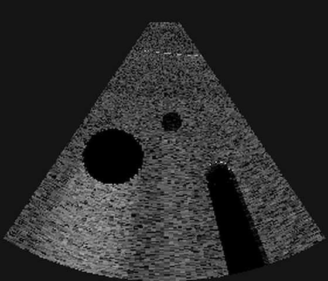

TELEDETECCIÓN Y PROCESADO DE IMÁGENES
Laboratorio de imagen
Simulaciones interactivas en el navegador · Grado en Física

TC · ventanas

PET · 511 keV

Ecografía · pulso-eco
miquelobrador.github.io/laboratorio-imagen